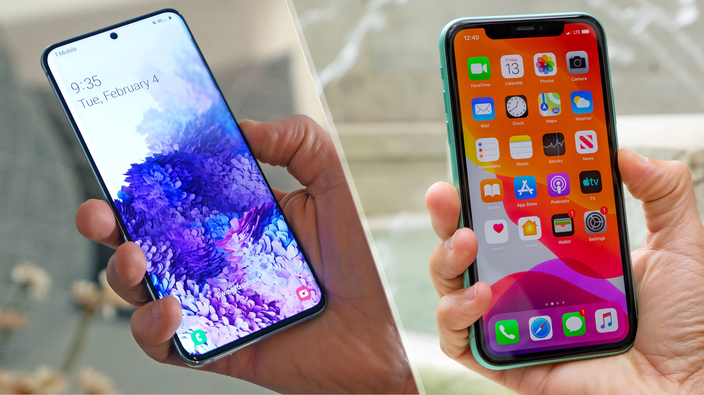
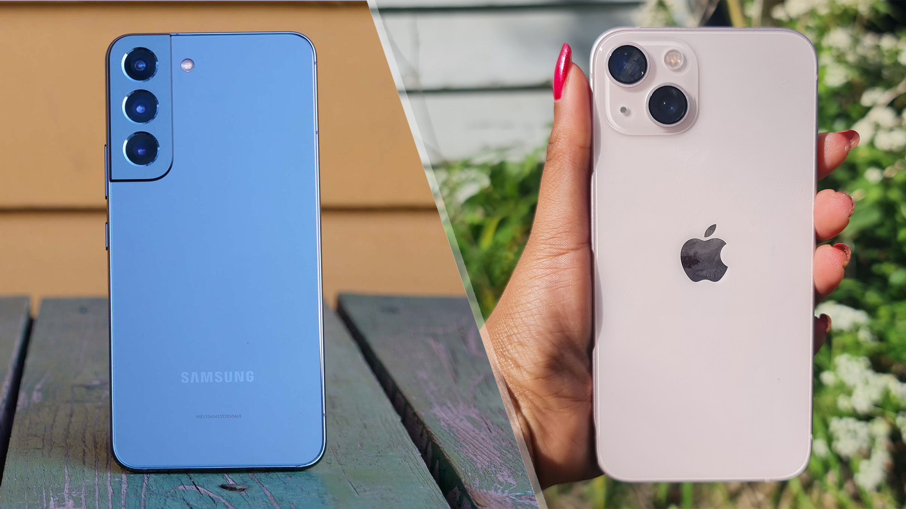
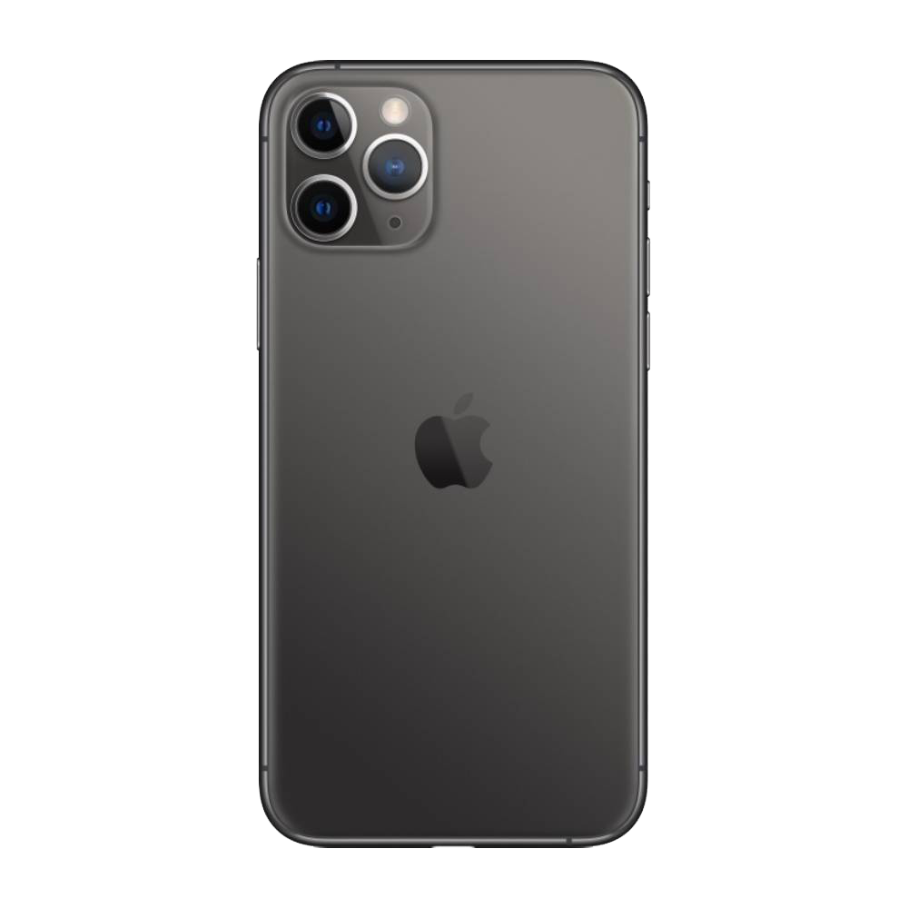
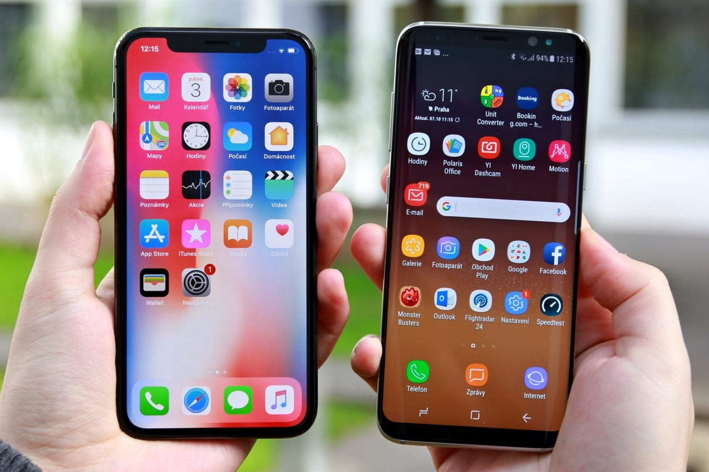

На рынке телефонии есть много компаний, конкурирующих между собой. И основное место в этой борьбе занимают смартфоны iPhone и Samsung. Спустя более 10 лет Айфоны все еще остаются популярными и имеют большое количество фанатов, которые с нетерпением ждут выхода новых гаджетов. Они остаются одними из премиальных смартфонов флагманского типа с рекордными продажами. С 2007 года, после выхода первого iPhone, началась игра одного актера. И только через три года телефоны на операционной системе Андроида начали составлять серьезную конкуренцию компании «яблочных» гаджетов.
Цена и соотношение цены и качества
Возможно, самая простая разница между iPhone и флагманами Samsung — это цена. Хотя поклонники Apple могут не согласиться, на первый взгляд вы можете подумать, что цены на iPhone завышены, особенно если вы еще не знакомы с экосистемой Apple. Флагманы Samsung, хотя и далеко не дешевые, с большей вероятностью обеспечат вам лучшую отдачу от затраченных средств. А поскольку у Samsung такой широкий выбор серий смартфонов, вы можете рассчитывать на выгодную сделку независимо от вашего бюджета. Напротив, большая часть того, что делает iPhone достойными, — это бесшовное программное обеспечение iOS и их тесная интеграция с другими продуктами Apple, такими как AirPods или Apple Watch. После того, как вы купите iPhone, очень вероятно, что вы захотите купить и другие продукты Apple, чтобы получить максимальную отдачу от своего устройства.
Камеры
Айфоны обычно пользуются большей популярностью, чем их аналоги от Samsung, с точки зрения качества фотографий, согласованности изображения и качества видео. Но с серией S22, а точнее с Galaxy S22 Ultra, Samsung значительно улучшила свою игру.
iPhone 11 Pro Max
- · Система трёх камер 12 Мп: сверхширокоугольная, широкоугольная и телефото;
- · Сверхширокоугольная: диафрагма ƒ/2.4 и угол обзора 120°;
- · Двукратный оптический зум на увеличение; двукратный оптический зум на уменьшение; цифровой зум (до 10 раз);
- · Автокоррекция;
- · Ночной режим;
- · Видео 4K с частотой 24, 30 или 60 кадров/с;
- · HD‑видео 1080p с частотой 30 или 60 кадров/;
- · Аудиозум;
- · Кинематографическая стабилизация видео (4K, 1080p и 720p);
- · Вспышка Retina Flash
Samsung Galaxy S22
- · Основная Камера: 50.0 MП + 10.0 MП + 12.0 MП;
- · Автофокус основной камеры;
- · Оптический зум 3х, цифровой зум до 30х;
- · Фронтальная Камера - Разрешение 10.0 МП;
- · Разрешение записи видео UHD 8K (7680 x 4320) @24 кадр/с
- · Замедленная съемка - 960кадр/с @HD, 240кадр/с @FHD;
- · Основная Камера - Оптическая стабилизация: Да
- · Фронтальная Камера - Разрешение: 10.0 МП
- · Фронтальная камера - Авто фокус: Да;
- · Фронтальная камера - Диафрагма: F2.2
Операционные системы
Сравнивать iOS и Android раньше было довольно просто из-за клише, утверждающего, что iOS проще, а Android более настраиваемый. Раньше это был конец истории. Но, как и в природе конкуренции, обе операционные системы развивались с годами, хотя старые заявления остаются довольно заметными и по сей день. Если вы помните TouchWiz, старый пользовательский интерфейс Samsung, вы знаете, насколько ужасной раньше была игра Samsung с программным обеспечением, что неудивительно, поскольку Samsung в основном занимается аппаратным обеспечением. Но текущая оболочка Samsung One UI, созданная поверх Android, легко обеспечивает одно из самых чистых программных приложений.
На противоположном конце спектра находится iOS — проприетарное программное обеспечение, дающее Apple больший контроль над взаимодействием с конечным пользователем, что позволяет лучше управлять оперативной памятью, обеспечивать бесперебойную работу программного обеспечения, безопасность пользователя и надежность. Кроме того, учитывая меньшее количество устройств iOS, разработчики приложений, такие как Instagram или PUBG, часто лучше оптимизируют свои приложения в соответствии с возможностями iOS.
Голосовые помощники
Siri в iPhone была голосовым помощником по умолчанию для устройства с момента выпуска iPhone 4S в 2011 году. Samsung, с другой стороны, представила встроенный голосовой помощник Bixby в 2017 году в серии Galaxy S8 в качестве альтернативы уже полезному. Google Ассистент работает на телефонах Android. Хотя попытка, безусловно, заслуживает похвалы, Bixby не был и во многом до сих пор не может сравниться с Apple Siri и Google Assistant, хотя в некоторых конкретных случаях он занимает лидирующие позиции. Но что касается чистой интуитивности, Google Assistant по-прежнему остается лучшим голосовым помощником для использования на любом смартфоне, независимо от того, используете ли вы iPhone, телефон Samsung или любой другой.
Apple против Samsung: что подходит именно вам?
В девяти из десяти случаев решение о покупке между двумя отличными альтернативами смартфонам сводится к следующему: личным предпочтениям. Так и здесь. Большинство людей, которые покупают iPhone, делают это из-за хорошо интегрированной экосистемы Apple и удобного пользовательского интерфейса. iPhone более надежно справляется с основными функциями, такими как вызовы, запись видео, системная навигация и просмотр веб-страниц. Напротив, если вы немного более предприимчивы и хотите иметь шаблон, поверх которого вы можете персонализировать и настроить свое устройство, телефоны Samsung — это то, что вам нужно. Флагманы Samsung, возможно, с лучшим дизайном, более интересной камерой, большим количеством функций и оболочкой One UI не перестают впечатлять.